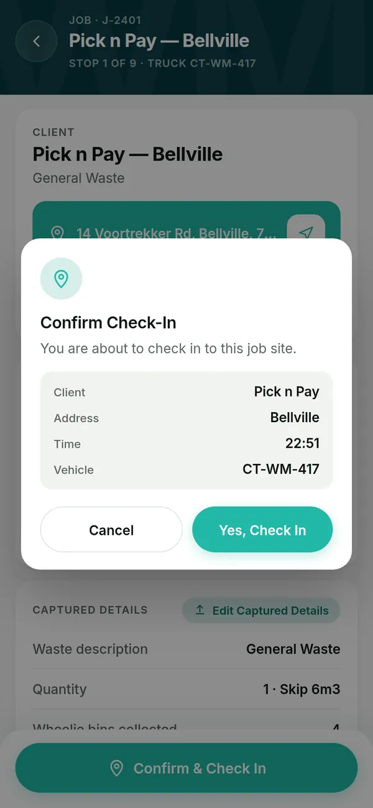
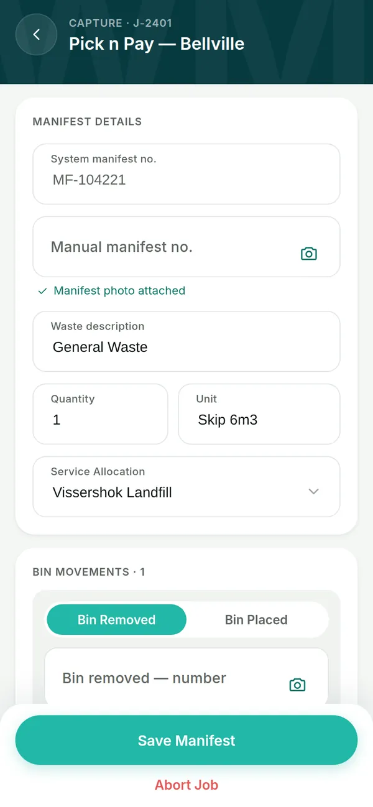
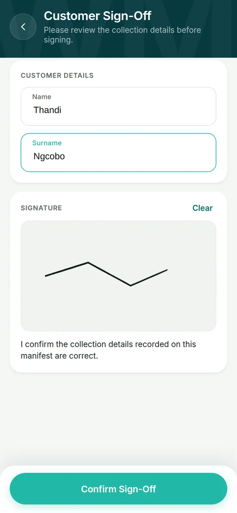
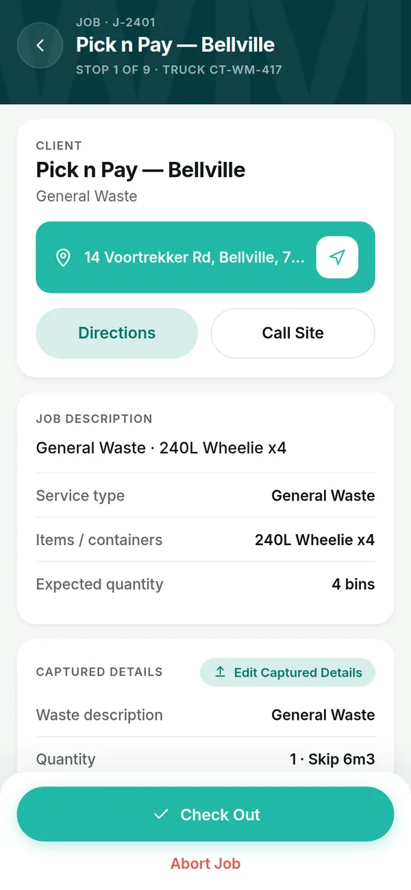
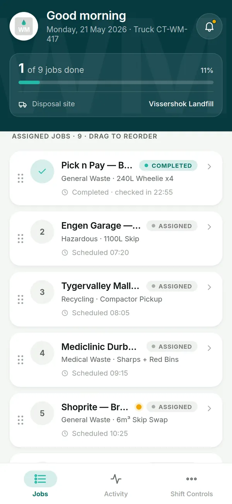
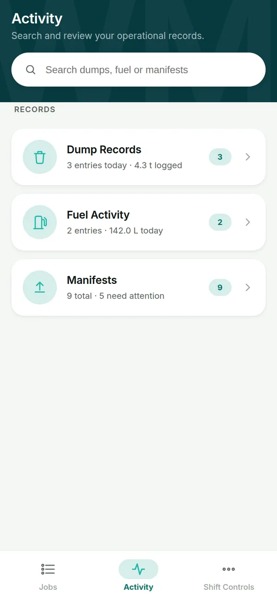
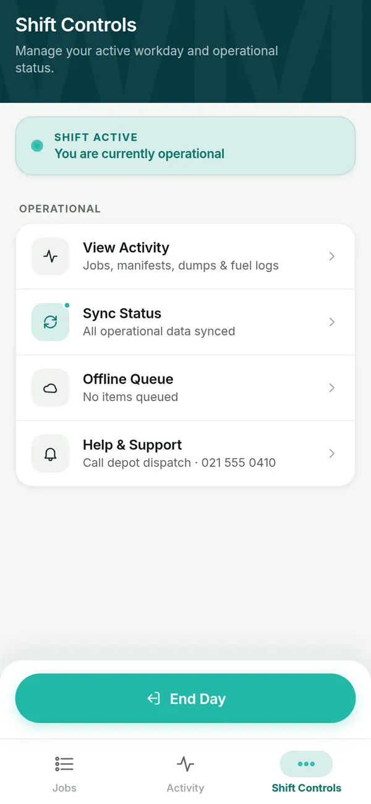
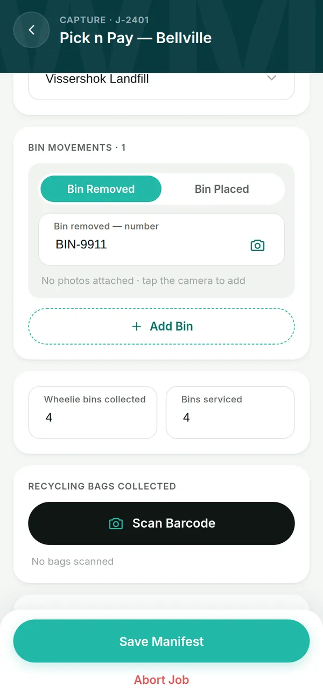
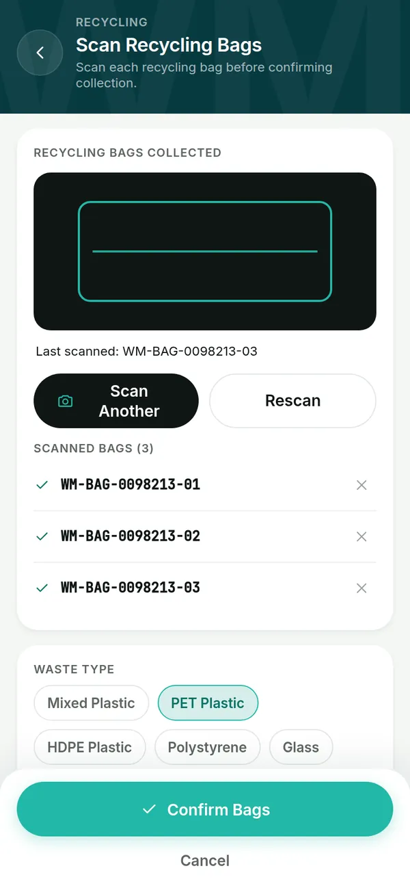
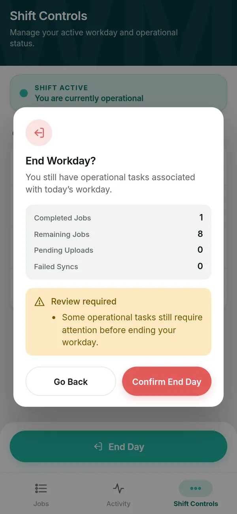

Mobile Product Design · UX/UI · Interaction Design
Designing a focused mobile experience for WasteMart.
WasteMart’s driver app supports a waste-collection driver through the working day — from choosing a truck and starting the day, through each job on the route, to closing the day out. The design goal was simple to state and hard to do: at any moment, the driver should know what to do next.


Screens from the WasteMart design prototype, with demo data.
01
Product context
A driver’s day is a chain of connected tasks, done in the cab and on site, often with one hand free and patchy signal.
The app covers the driver’s side of waste collection: picking a vehicle and starting the shift, working through a route of assigned jobs, checking in at each client site, recording what was collected and where it went, capturing evidence and the customer’s sign-off, and ending the day.
The records the driver creates are used later by someone who wasn’t there — an operations team checking manifests, bins and disposal. So the app has two audiences: the driver using it now, and the person relying on its record afterwards.
02
Design challenge
How do you design detailed operational software for people who are busy doing the actual work?
Operational depth
Manifests, bin numbers, waste types, quantities, barcodes, photos and signatures all need to be captured correctly.
Speed
Drivers can’t fight through menus between stops. The next action has to be obvious.
Accuracy
A missing or wrong detail can cause problems hours later, for someone in an office.
Unreliable signal
Connectivity drops in the field. The driver must never wonder whether their work was lost.
I framed the product around four questions the driver should be able to answer at any point: What am I doing now? What is already done? What still needs to happen? What happens if something goes wrong?
03
User journeys
Journey 1 · Starting the day
- 01Log in
- 02Choose a vehicle
- 03Confirm start
- 04See the day’s jobs

Journey 2 · Completing a job
- 01Open job
- 02Check in on site
- 03Capture details
- 04Evidence & sign-off
- 05Save manifest
- 06Check out








Journeys are drawn from the designed workflow. No formal user research or personas were produced for this project.
04
Information architecture
Three tabs, with the working day as the backbone.
The app is structured around the shape of a shift rather than a set of isolated screens. Jobs are where the day happens; Activity holds the records around it; Shift Controls is where the day is managed and ended.
WasteMart driver app
Start of day
- Log in
- Select vehicle
- Start day
Jobs
- Today’s jobs, in route order
- Job detail
- Check in / check out
- Capture details
- Evidence & sign-off
Activity
- Dump records
- Fuel activity
- Manifests
Shift Controls
- Sync status
- Offline queue
- Help & support
- End day
- 01Workday
- 02Jobs
- 03Job execution
- 04Evidence
- 05Completion
- 06End of day






05
Interaction decisions
Decision 01
The primary action follows the job’s state
- The challenge
- A job moves through several stages. Drivers shouldn’t have to remember which step they’re on or hunt for the right button.
- Considerations
- Showing every action at once is flexible but puts the burden of choosing on the driver, in the moment they’re least able to think about it.
- My decision
- Each job has one primary button at the bottom of the screen, and its label changes with the job’s state: Confirm & Check In, Save Manifest, Check Out.
- Rationale
- The workflow manages the interface, not the other way round. One job, one next action.
Decision 02
Treat each kind of evidence as its own flow
- The challenge
- The record needs proof — of the paperwork, of which bins moved, of the bags collected and of the customer’s agreement. These are different capture problems.
- Considerations
- A single generic “add photo” feature would be simpler to build, but would mix four kinds of proof together and make the record harder to check later.
- My decision
- Separate flows for the manifest photo, bin movements (removed and placed are tracked separately), barcode scanning for recycling bags, and a drawn customer signature that the manifest can’t be saved without.
- Rationale
- Each piece of proof stays readable on its own, which matters to the person reconstructing the job afterwards.
Evidence




Decision 03
Make sync visible without making it the focus
- The challenge
- Signal drops in the field. If the app doesn’t say whether work was saved, drivers repeat it or worry about it.
- Considerations
- Blocking pop-ups for every connection change would be loud and disruptive; hiding sync entirely would erode trust.
- My decision
- A quiet, persistent strip with four states — Online, Syncing, Offline (saved on the phone), Sync failed — plus a Sync Status and Offline Queue in Shift Controls.
- Rationale
- The driver can always check that nothing has been lost, without connectivity becoming the centre of the experience.
Decision 04
Ending the day is a review, not a button
- The challenge
- An early or incomplete close-out is exactly when the office needs the most information — and when a driver is most likely to rush.
- Considerations
- A simple confirmation is fast but lets unfinished work slip through without explanation.
- My decision
- End Day opens a summary of jobs completed and remaining, pending uploads and failed syncs. If work is outstanding, ending anyway asks for a reason code and an optional note.
- Rationale
- Whoever reviews the day sees not only that something was left undone, but why, in the driver’s own words.
Evidence


06
Visual system
A restrained system built for glanceability: strong hierarchy, high-contrast primary actions, clear status and large touch targets.
Colour
- Deep teal — headers
- Teal — primary action
- Mint — notices
- Red — ending the day
- Neutral — surface
Components in the design
- Full-width primary button
- Secondary and text buttons
- Labelled form fields
- Segmented control
- Job cards with status chip
- Confirmation sheets
- Toast
- Bottom tab bar
Spacing
8 · 16 · 24 · 40 · 64 — large touch targets by default.
Colour values are sampled from the screens shown here.
07
Development progress
Complete
Design
- Full driver workflow designed, start of day to end of day
- Interactive prototype covering the state changes, evidence flows, audit trail for corrections and the two-stage close-out
Underway
Development
The app is being built by the development team. It has not launched and has not yet been tested with drivers.
The prototype runs in the browser. Log in with any details and pick truck CT-WM-417 to run a job end to end. It is a design prototype, not the production app.
08
Reflection
Complexity should live in the system, not in the driver’s head.
The app handles several jobs, many states, four kinds of evidence, exceptions and offline work. The driver shouldn’t have to hold any of that in mind; the interface’s job is to make the next right action obvious, and the record it leaves behind has to make sense to someone who wasn’t there.
What to evaluate once it reaches testing
- Whether drivers can complete a job without help on their first shift.
- Whether the state-driven primary button is understood, or whether people look for other actions.
- How the bin-mismatch and correction flows hold up against real paperwork.
- Whether the sync strip is noticed, and trusted, when signal drops.
- Whether operations staff find the end-of-day reasons useful.